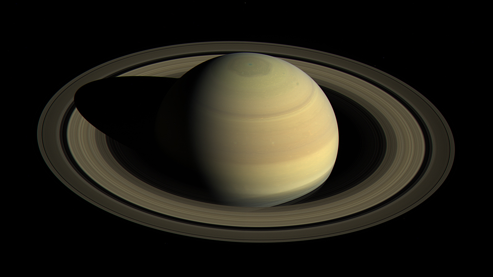

Planets
Home
Mercury
Venus
Earth
Mars
Jupiter
Uranus
Neptune
Picture of Day
Solar System Model
Saturn

Saturn's rings.
Show Facts
Saturn has over 30 rings which are in 7 groups.
Saturn has 62 moons.
Temperature is -288.4°F.
Saturn orbits the Sun once every 29.4 Earth years.
Saturn turns on its axis once every 10 hours and 34 minutes.